관찰 기록지와 관찰 기록 DC-OBS · Field Observation Sheets · v4 – v6 · 11 sheets
구 충남도청 조사 자료 — 기록지 서식 3개 버전 + 현장 관찰 기록 11장 (2026. 9. 17 – 10. 23)
본관 중앙계단에서 걸음을 멈추고 사진을 찍거나 찍히는 사람의 자세를 비식별 수기로 기록한 자료입니다. 기록지 서식은 관찰이 진행되는 동안 세 번 바뀌었고, 그 변화 자체가 관리국이 '보통의 자세'를 어떤 기준으로 나누게 됐는지의 기록입니다. 관찰 기록 11장은 현장 손기록을 같은 서식에 옮긴 전사본이며, 얼굴 · 옷차림 · 성별 · 나이 등 알아볼 수 있는 정보는 적지 않았습니다. 누르면 원본 크기로 열립니다.
정지 후 처음 취한 자세를 포즈 유형 P1–P20 중 하나로 적고, P21–24는 미등록 포즈 승격용 빈 칸으로 둡니다. 위치는 플랫폼 ①②③에 좌우 L/C/R을 붙이고, 동행은 혼/일, 촬영은 셀/일/무, 체류는 초 단위(선택)로 적습니다. 코드에 없는 자세는 U-번호를 쓰고 선으로 그리며, 같은 자세가 3회 나오면 다음 장부터 승격합니다.

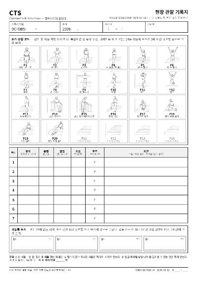

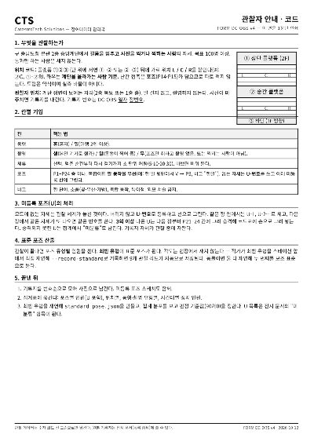
첫 두 번의 관찰에서 셀카가 계속 미등록으로 남아, P21–P23을 셀카 자세(팔 뻗기 · 빈손 V · 계단 등지기)로 등록하고 승격 칸은 P24 하나로 줄였습니다. 동행은 인원 수까지 2(n)로, 촬영은 1 셀카 / 2 일행으로 바꾸고 체류 칸은 뺐습니다. 이어서 취한 포즈는 비고에 +코드로 적어, 첫 포즈 분포와 전체 포즈 분포를 따로 집계합니다.

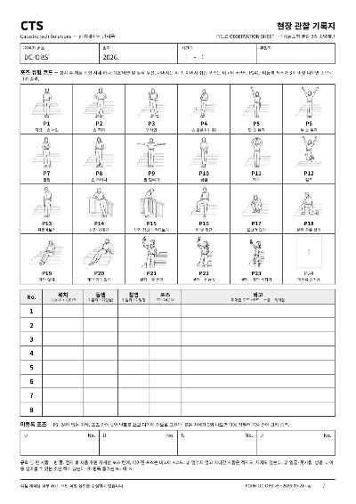

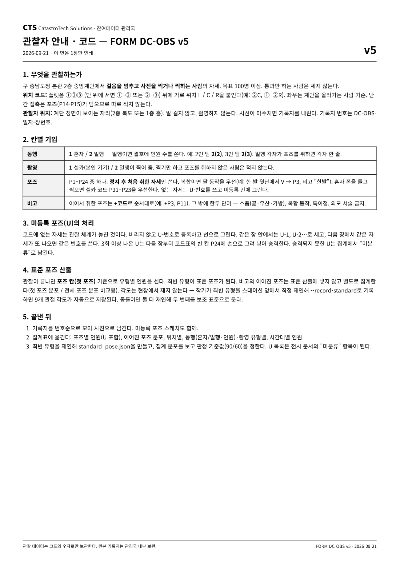
포즈를 하나하나 맞추는 대신 범주 8개로 묶었습니다 — A 손 아래 · B 손 위 · F 몸 낮춤 · I 한 발 듦 · H 뒤돌아섬 · G 셀카 · X 구조물 의존 · U 미분류. 팔은 손목이 어깨선보다 위인가 아래인가만 보고, 손 모양 · 시선은 보지 않습니다. 두 범주에 걸치면 G › H › X › F › I › B › A 순서로 판정합니다. 위치의 좌우 구분을 없앴고, v5 기록과의 대응표를 붙여 앞선 기록을 새 범주로 옮겼습니다. X는 판정 장치가 재현할 수 없는 자세로 따로 셉니다.

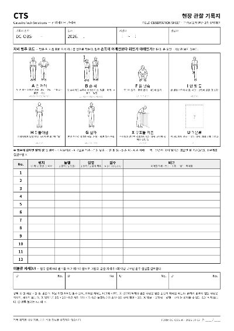

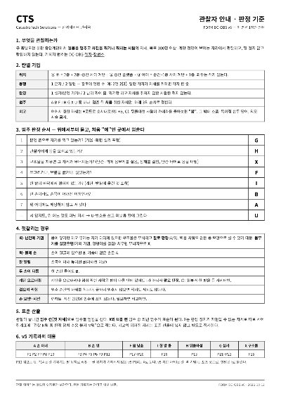

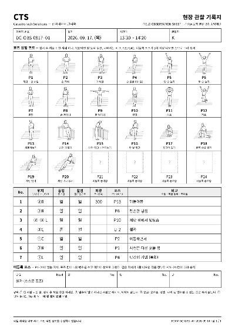

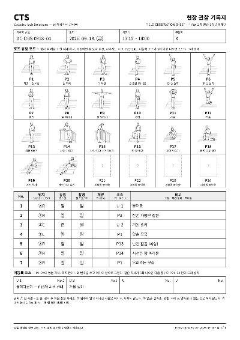

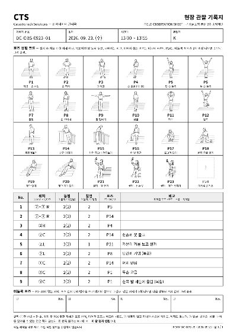

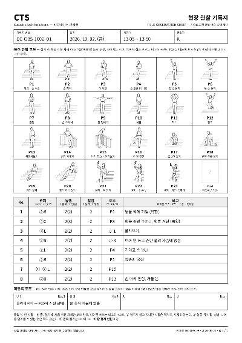

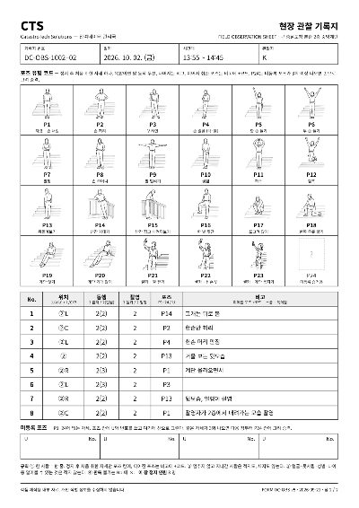

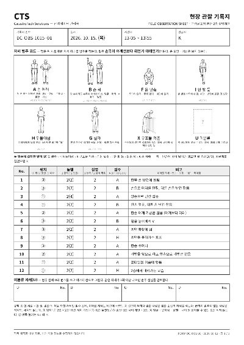

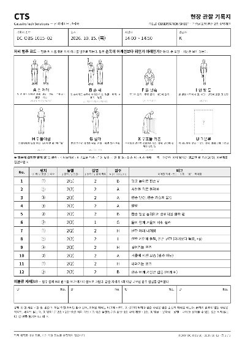

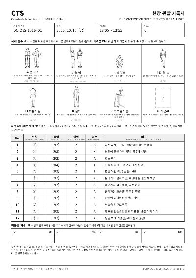

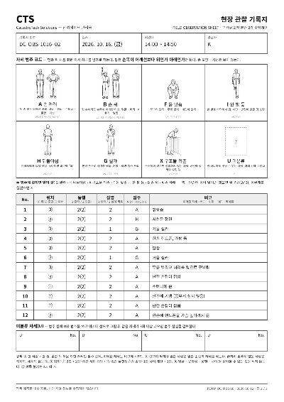

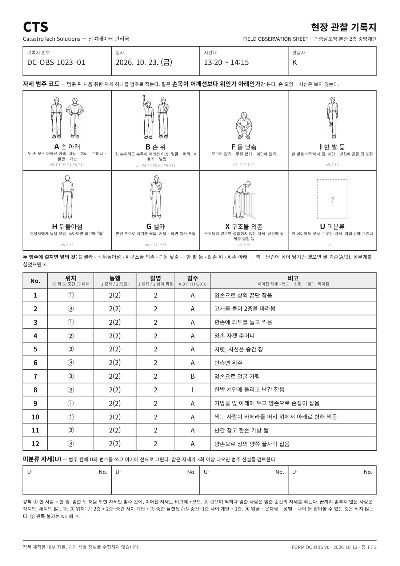

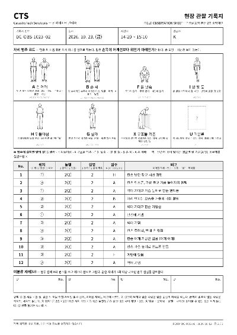